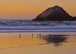
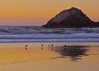

 2/17/13 6:03 PM
 2/17/13 6:03 PMModel: DMC-GF1
focalLength35mm: 98.0mm
meteringMode: Spot
isoEquivalent: 100
exposureTime: 1/5s
aperture: 10.0
Exposure Bias Value: 0 EV
Exposure Program: Manual control
White Balance: Auto white balance
flash: noFlash
resolution: 2481 x 1772
">